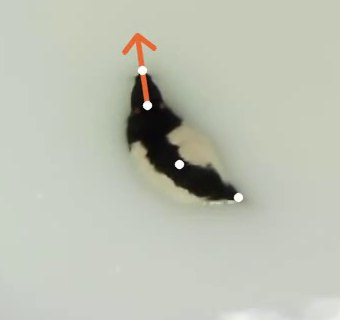
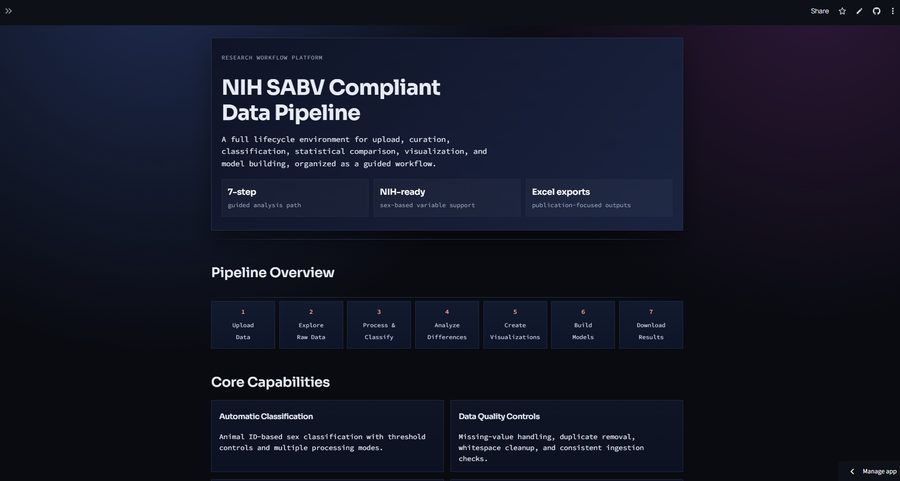
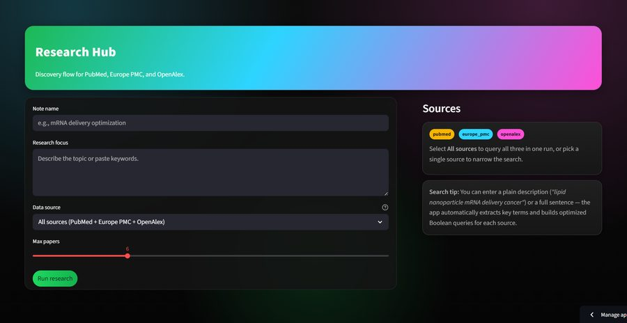

Compulsive checking in the water maze
Overtraining and aversive affect as a rat model of OCD-like checking, with sex and individual differences. Poster, Society for Neuroscience, Washington, DC, Wednesday, November 18, 2026.
Behavioral neuroscience · M.A. candidate, Towson University
I study learning, memory, and compulsive checking in rats, and I build the software I need to measure behavior more directly. Lab manager in the Laboratory of Comparative Neuroscience (Bryan D. Devan, Ph.D.).
Featured research
Archival 1999 cohort, tracked with DeepLabCut. Full 120 s at 4× speed: a typical female leaves three times; a typical male never moves.
Rats are placed on a hidden platform for 120 seconds. Most males stay put. Most females scan with their heads, step away, and come back, often toward where the platform sat during training. I trained pose-estimation models on archival and current-cohort video to measure that behavior frame by frame.
Poster data, descriptive and still being validated.
Overtraining and aversive affect as a rat model of OCD-like checking, with sex and individual differences. Poster, Society for Neuroscience, Washington, DC, Wednesday, November 18, 2026.
Relating archived checking behavior to parvalbumin interneurons and perineuronal nets (WFA) in dorsolateral and dorsomedial striatum, prefrontal cortex, and hippocampus.
Harmonizing public Morris water maze trajectory datasets to test for behavior nobody has characterized yet, starting with slowing near the goal.
Insurance coverage and health outcomes from public county-level data, using regression, clustering, and visual summaries. Finalist, Towson Data Analytics Competition. Associations, not causation.
A software prototype for human spatial-navigation tasks that parallel the rat water maze. A working environment is a milestone; equivalence to a validated task is a separate question.
Open research tools
Public betas with the code available to inspect. A working demonstration is where review starts.

Public beta · MIT
Touch-based frame labeling for DeepLabCut, so annotation can happen on a phone or tablet and flow back into the analysis.
Where I want criticism: annotation precision, gestures, accessibility, and whether exported labels keep the intended data.

Public beta · MIT
A Streamlit workflow for preclinical behavioral data that keeps sex as a biological variable visible at every step.
Does not certify NIH compliance or validate a study design.

Open source · MIT
Searches PubMed, Europe PMC, and OpenAlex and helps turn a research question into Boolean queries.
Not a guarantee of a comprehensive literature search.
A practical guide to turning an awkward lab task into a small, testable design: define what it needs to do, measure what it touches, and print a fit test before committing.
About
My background is in behavioral neuroscience, with interests in learning, memory, spatial navigation, and individual differences in behavior. The questions lead me between behavioral experiments, data analysis, programming, and physical prototyping.
My strength is taking a problem far enough that we can actually examine it: a working interface, an analysis we can inspect, or a physical tool we can try. I learn what the next step requires, and I change direction when the evidence calls for it.
01 · Ask
What question matters, and what would a useful result look like?
02 · Build
Learn the method, write the code, or design the part.
03 · Examine
Check against something known. Invite someone else to try it.
04 · Revise
Document the limits and share enough for others to inspect.
Contact
I'm applying to PhD programs for Fall 2027 and open to research collaborations and scoped analysis work.
For feedback on a tool, open an issue in its repository: what you tried, what you expected, and what happened.